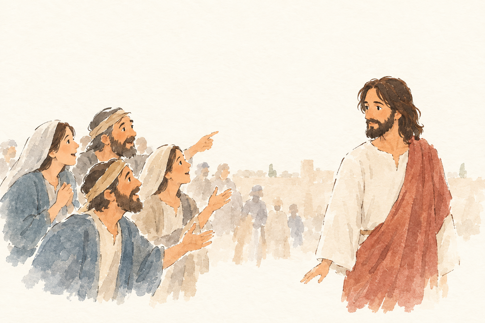
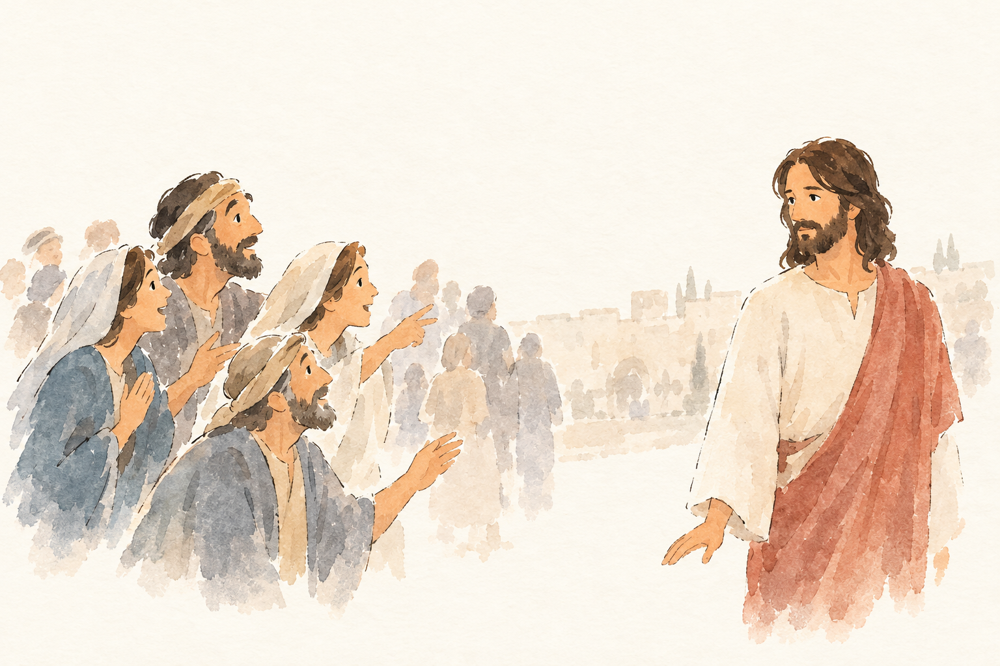

Kachel: bestanden, Kern 2 Nichts Wesentliches fehlt; die Szene und die Aussage, dass Jesus ihnen nicht vertraut, weil er die Menschen kennt, werden erkannt.

JHN-002-J2__r1v1.png ✔ gewählt: bestanden, 5 Punkte, Kern 1 Die Menschen wirken zwar gläubig/anerkennend gegenüber Jesus, aber es fehlt, dass sie wegen der Zeichen glauben und dass Jesus sich ihnen nicht anvertraut, weil er ihr Inneres kennt.
Blind: A small group of people on the left are reacting warmly to the bearded man in the white tunic and red cloak on the right. One man points toward him while the others smile, clasp their hands, or reach out as if greeting or recognizing him. – This appears to be a Gospel scene with Jesus being recognized or greeted by people. The exact Bible story is not identifiable from the visible details; it could be a general moment of people pointing out or approaching Jesus.

JHN-002-J2__r1v2.png: bestanden, 5 Punkte, Kern 1 Es fehlt, dass sie wegen der gesehenen Zeichen glauben; vor allem fehlt Jesu Zurückhaltung, dass er sich ihnen nicht anvertraut, weil er ihr Inneres kennt.
Blind: A group of people on the left are looking and gesturing excitedly toward the bearded man in white and red on the right. He stands apart from them and looks back calmly, as if listening or responding. – This may illustrate a Bible scene involving Jesus being recognized or approached by followers; the exact story is not certain from the visible details alone.
Kachel: bestanden, Kern 2 Nichts Wesentliches fehlt; die Szene und die Aussage, dass Jesus ihnen nicht vertraut, weil er die Menschen kennt, werden erkannt.